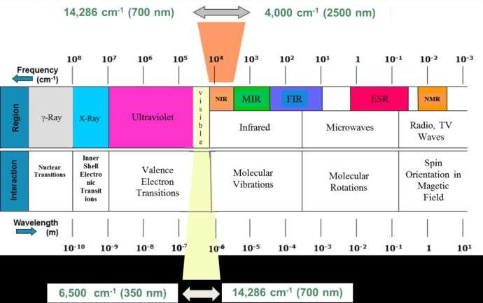
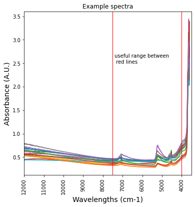
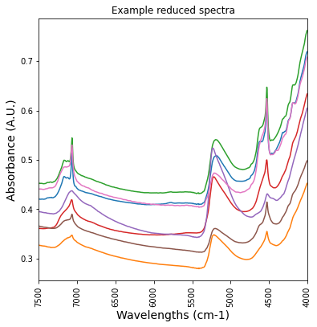
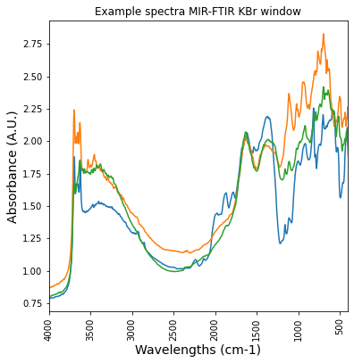
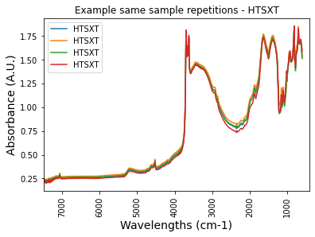
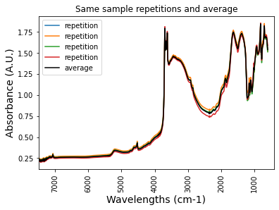
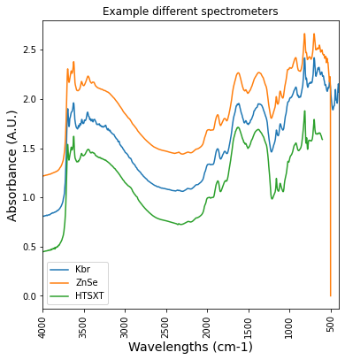
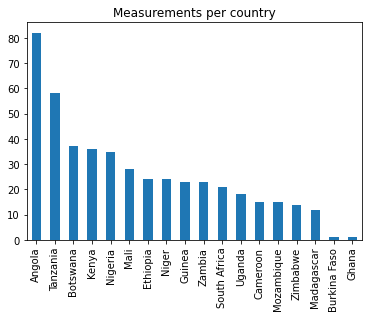
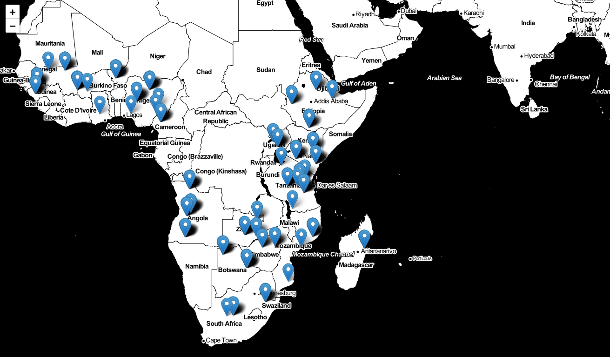
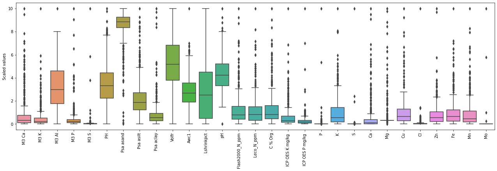

#! pip install awscli brukeropusreader tqdm pandas matplotlib folium seaborn pathlib
#commented out after the installation is completed in case you run again the notebook 1.1 Prerequisities and import libraries
- To download data:
- aws-cli
- To parse and manage datasets:
- brukeropusreader
- pandas
- tqdm
Installation below:
#import pyspark
import pandas as pd
import numpy as np
import matplotlib.pyplot as plt
import seaborn as sns
from IPython.display import Image
import folium
from pathlib import Path
from brukeropusreader import read_file
from collections import Counter
from tqdm import tqdm_notebook as tqdm1.2 Downloading the Soil Chemistry Dataset from AWS
Download s3 bucket content with the aws-cli command line tool. Run aws configure beforehand to set your credentials.
#! aws s3 sync s3://afsis afsis --no-sign-request
# commented out after the download is completed in case you run again the notebook1.3 Loading OPUS spectra
OPUS spectra are created using Bruker instruments Infrared spectrometers To be opened brukeropusreader package is needed.
The function brukeropusreader.read_file parses the binaries and returns a data structure containing information about the wave numbers, absorbance spectra, and file metadata.
Here we plot a few of the spectra.
2. Geographical references
The AfSIS Soil Chemistry Dataset contains georeferences for each spectra. It is worth noting that it consists of two datasets, one for the subsaharian Africa and one with additional data recorded only in Tanzania.
2.1 Dataframes exploration
GEOREFS_FILE1 = 'afsis/2009-2013/Georeferences/georeferences.csv'
df_geo1 = pd.read_csv(GEOREFS_FILE1)# dataframe for several african countries
df_geo1 = df_geo1.sort_values(by=['Site', 'Cultivated'])
print(df_geo1.shape)
print(df_geo1.isna().sum())
df_geo1.head()(1843, 14)
SSN 0
Public 0
Latitude 0
Longitude 0
Cluster 0
Plot 0
Depth 0
Soil material 94
Scientist 0
Site 0
Country 0
Region 232
Cultivated 798
Gid 0
dtype: int64| SSN | Public | Latitude | Longitude | Cluster | Plot | Depth | Soil material | Scientist | Site | Country | Region | Cultivated | Gid | |
|---|---|---|---|---|---|---|---|---|---|---|---|---|---|---|
| 460 | icr016032 | True | 5.423182 | -0.709083 | 15 | 1 | top | Aju.15.1.Topsoil.Std fine soil | Jerome Tondoh | Ajumako | Ghana | West Africa | False | 345 |
| 500 | icr016033 | True | 5.423182 | -0.709083 | 15 | 1 | sub | Aju.15.1.Subsoil.Std fine soil | Jerome Tondoh | Ajumako | Ghana | West Africa | False | 346 |
| 666 | icr015913 | True | 5.377035 | -0.726425 | 9 | 1 | sub | Aju.9.1.Subsoil.Std fine soil | Jerome Tondoh | Ajumako | Ghana | West Africa | False | 334 |
| 732 | icr016053 | True | 5.447667 | -0.717422 | 16 | 1 | sub | Aju.16.1.Subsoil.Std fine soil | Jerome Tondoh | Ajumako | Ghana | West Africa | False | 348 |
| 957 | icr015973 | True | 5.434675 | -0.728883 | 12 | 1 | sub | Aju.12.1.Subsoil.Std fine soil | Jerome Tondoh | Ajumako | Ghana | West Africa | False | 340 |
GEOREFS_FILE2 = 'afsis/tansis/Georeferences/georeferences.csv'
df_geo2 = pd.read_csv(GEOREFS_FILE2)# dataframe with additional data for Tanzania
df_geo2 = df_geo2.sort_values(by=['Site', 'Cultivated'])
print(df_geo2.shape)
df_geo2.head()(18819, 14)| Cluster | Country | Cultivated | Depth | Gid | Latitude | Longitude | Plot | Region | SSN | Sampling date | Scientist | Site | Soil material | |
|---|---|---|---|---|---|---|---|---|---|---|---|---|---|---|
| 29 | 2.0 | Tanzania | False | top | 46.0 | -3.029698 | 33.015202 | 2.0 | East Africa | icr011843 | NaN | Leigh Winoweicki | Bukwaya | Buk.2.2.Topsoil.Std fine soil |
| 31 | 4.0 | Tanzania | False | top | 48.0 | -2.992815 | 33.016113 | 1.0 | East Africa | icr011881 | NaN | Leigh Winoweicki | Bukwaya | Buk.4.1.Topsoil.Std fine soil |
| 32 | 5.0 | Tanzania | False | top | 49.0 | -3.060982 | 33.030663 | 1.0 | East Africa | icr011901 | NaN | Leigh Winoweicki | Bukwaya | Buk.5.1.Topsoil.Std fine soil |
| 35 | 8.0 | Tanzania | False | top | 52.0 | -2.987467 | 33.033264 | 1.0 | East Africa | icr011960 | NaN | Leigh Winoweicki | Bukwaya | Buk.8.1.Topsoil.Std fine soil |
| 36 | 9.0 | Tanzania | False | top | 53.0 | -3.058480 | 33.065014 | 3.0 | East Africa | icr011978 | NaN | Leigh Winoweicki | Bukwaya | Buk.9.3.Topsoil.Std fine soil |
The tansis folder contains measurements for Tanzania only. FTIR spectra in this folder are not readable and make it unusable
todrop = ['Soil material','Scientist', 'Site', 'Region', 'Gid','Plot','Public'] #irrelevant
df_geo = df_geo1.drop(todrop, axis = 1)3. Dry Chemistry
The AfSIS Soil Chemistry dataset contains dry and wet chemistry data taken at each sampling location.
3.1 X-ray fluorescence (XRF) elemental analysis
with XRF we get the concentration of various chemical elements in the sample
Units are parts per million (ppm)
https://www.elementalanalysis.com/xrf.html
file1path = "afsis/2009-2013/Dry_Chemistry/ICRAF/Bruker_TXRF/TXRF.csv"
file2path = "afsis/tansis/Dry_Chemistry/ICRAF/Bruker_TXRF/TXRF.csv"
xrf_africa = pd.read_csv(file1path)
xrf_tanzania = pd.read_csv(file2path)
print('measurements 2009-13',xrf_africa.shape,'measurements 2014', xrf_tanzania.shape)
print("the table below shows the concentration in ppm for each element detected")
xrf_africa.head() measurements 2009-13 (1904, 42) measurements 2014 (224, 42)
the table below shows the concentration in ppm for each element detected| SSN | Public | Na | Mg | Al | P | S | Cl | K | Ca | ... | Pr | Nd | Sm | Hf | Ta | W | Hg | Pb | Bi | Th | |
|---|---|---|---|---|---|---|---|---|---|---|---|---|---|---|---|---|---|---|---|---|---|
| 0 | icr005965 | True | 16023.3 | 4433.5 | 37618.6 | 84.4 | 45.7 | 268.1 | 12412.2 | 30705.6 | ... | 0.9 | 14.7 | 14.0 | 0.9 | 2.5 | 0.2 | 4.9 | 3.9 | 0.1 | 13.4 |
| 1 | icr005966 | True | 20524.6 | 5832.2 | 40248.2 | 72.1 | 45.7 | 229.6 | 12892.2 | 23234.5 | ... | 1.1 | 15.8 | 18.2 | 0.5 | 3.2 | 0.2 | 4.2 | 3.3 | 0.1 | 19.9 |
| 2 | icr005985 | True | 19350.4 | 5085.8 | 36766.3 | 50.6 | 45.7 | 157.3 | 16839.7 | 16746.2 | ... | 1.2 | 19.2 | 14.1 | 0.8 | 2.0 | 1.2 | 2.6 | 12.0 | 0.1 | 17.9 |
| 3 | icr005986 | True | 17410.2 | 5271.2 | 37912.2 | 50.6 | 45.7 | 285.2 | 16818.0 | 31939.6 | ... | 1.1 | 16.7 | 12.6 | 0.3 | 1.2 | 0.5 | 6.3 | 10.2 | 0.1 | 16.5 |
| 4 | icr005998 | True | 19092.5 | 9169.8 | 37359.8 | 50.6 | 45.7 | 251.4 | 17577.9 | 25298.2 | ... | 1.1 | 16.7 | 17.2 | 0.5 | 3.2 | 0.4 | 4.2 | 5.6 | 0.1 | 18.4 |
5 rows × 42 columns
mask_diff_xrf = xrf_africa[xrf_africa['SSN'].isin(diff_list )]
df_xrf = pd.concat([xrf_tanzania, mask_diff_xrf]) print(df_xrf.shape, len(df_xrf.SSN.unique()))(1838, 42) 1838print('important elements for agriculture')
# https://www.qld.gov.au/environment/land/management/soil/soil-properties/fertility
important_elements = ['P','K', 'S','Ca','Mg','Cu','Cl','Zn','Fe', 'Mn','Mo' ]
df_xrf_reduced = df_xrf[important_elements]#/10000# express in %
df_xrf_reduced['SSN'] = df_xrf['SSN']
df_xrf_reduced.head()important elements for agricultureSettingWithCopyWarning:
A value is trying to be set on a copy of a slice from a DataFrame.
Try using .loc[row_indexer,col_indexer] = value instead
See the caveats in the documentation: https://pandas.pydata.org/pandas-docs/stable/user_guide/indexing.html#returning-a-view-versus-a-copy
df_xrf_reduced['SSN'] = df_xrf['SSN']| P | K | S | Ca | Mg | Cu | Cl | Zn | Fe | Mn | Mo | SSN | |
|---|---|---|---|---|---|---|---|---|---|---|---|---|
| 0 | 84.4 | 12412.2 | 45.7 | 30705.6 | 4433.5 | 10.1 | 268.1 | 25.3 | 22263.2 | 356.1 | 184.5 | icr005965 |
| 1 | 72.1 | 12892.2 | 45.7 | 23234.5 | 5832.2 | 11.8 | 229.6 | 29.4 | 26269.6 | 379.7 | 184.5 | icr005966 |
| 2 | 50.6 | 16839.7 | 45.7 | 16746.2 | 5085.8 | 22.1 | 157.3 | 32.4 | 22790.2 | 323.4 | 184.5 | icr005985 |
| 3 | 50.6 | 16818.0 | 45.7 | 31939.6 | 5271.2 | 24.9 | 285.2 | 34.4 | 22939.1 | 332.5 | 184.5 | icr005986 |
| 4 | 50.6 | 17577.9 | 45.7 | 25298.2 | 9169.8 | 13.1 | 251.4 | 35.4 | 24985.2 | 408.3 | 184.5 | icr005998 |
# how disperse are the XRF data?
print(df_xrf_reduced.shape)
df_xrf_reduced.describe()(1838, 12)| P | K | S | Ca | Mg | Cu | Cl | Zn | Fe | Mn | Mo | |
|---|---|---|---|---|---|---|---|---|---|---|---|
| count | 1838.000000 | 1838.000000 | 1838.000000 | 1838.000000 | 1838.000000 | 1838.000000 | 1838.000000 | 1838.000000 | 1838.000000 | 1838.000000 | 1838.000000 |
| mean | 0.011513 | 1.126107 | 0.007641 | 0.758606 | 0.730171 | 0.001519 | 0.026368 | 0.002566 | 2.633472 | 0.040358 | 0.019379 |
| std | 0.046650 | 1.268460 | 0.040276 | 2.284191 | 0.733123 | 0.001496 | 0.222005 | 0.002984 | 2.673819 | 0.052072 | 0.012800 |
| min | 0.002950 | 0.009040 | 0.003320 | 0.004400 | 0.402890 | 0.000050 | 0.000600 | 0.000090 | 0.007430 | 0.000540 | 0.017950 |
| 25% | 0.005060 | 0.240008 | 0.004570 | 0.046742 | 0.557500 | 0.000450 | 0.005687 | 0.000780 | 0.779240 | 0.010405 | 0.018450 |
| 50% | 0.005060 | 0.696950 | 0.004570 | 0.141455 | 0.557500 | 0.001125 | 0.010050 | 0.001890 | 1.947845 | 0.022950 | 0.018450 |
| 75% | 0.005060 | 1.624108 | 0.004570 | 0.518190 | 0.557500 | 0.002050 | 0.016350 | 0.003437 | 3.452745 | 0.052255 | 0.018450 |
| max | 1.246380 | 10.627340 | 0.970400 | 42.643090 | 13.689340 | 0.012840 | 7.438340 | 0.073000 | 22.908970 | 0.660790 | 0.444250 |
3.2 Fourier transform infrared spectroscopy (FTIR)
A word about units. Most spectra using electromagnetic radiation are presented with wavelength as the X-axis in nm or μm. Originally, IR spectra were presented in units of micrometers. Later (1953) a different measure, the wavenumber given the unit cm-1, was adopted.
ν (cm-1)= 10,000/λ (μm)
The spectra may appear to be “backward” (large wavenumber values on the left, running to low values on the right); this is a consequence of the μm to cm-1 conversion
3.2.1 NIR (near infrared range) FTIR
spectral range: 12500 - 4000 cm-1 or 700 - 2500 nm for near infrared (NIR)
Image(filename='img/NIR.jpeg') 
NIR_SPECTRA_DIR = 'Bruker_MPA/*'
AFSIS_PATH = Path('afsis/2009-2013/Dry_Chemistry/ICRAF')
names = []
spectra = []
for path in tqdm(AFSIS_PATH.glob(NIR_SPECTRA_DIR )):
if path.is_file():
spect_data = read_file(path)
spectra.append(spect_data["AB"])
names.append(path.stem)
wave_nums = spect_data.get_range()
column_names = ['{:.0f}'.format(x) for x in wave_nums]
near_infrared_df = pd.DataFrame(spectra, index=names, columns=column_names)
near_infrared_df.head()TqdmDeprecationWarning: This function will be removed in tqdm==5.0.0
Please use `tqdm.notebook.tqdm` instead of `tqdm.tqdm_notebook`
for path in tqdm(AFSIS_PATH.glob(NIR_SPECTRA_DIR )):| 12493 | 12489 | 12485 | 12482 | 12478 | 12474 | 12470 | 12466 | 12462 | 12458 | ... | 3633 | 3630 | 3626 | 3622 | 3618 | 3614 | 3610 | 3606 | 3603 | 3599 | |
|---|---|---|---|---|---|---|---|---|---|---|---|---|---|---|---|---|---|---|---|---|---|
| icr033603 | 0.744053 | 0.744943 | 0.737978 | 0.734149 | 0.738894 | 0.741579 | 0.738796 | 0.740573 | 0.745435 | 0.745959 | ... | 2.679350 | 2.639192 | 2.631729 | 2.611440 | 2.646616 | 2.508814 | 2.414326 | 2.423105 | 2.533958 | 2.656340 |
| icr042897 | 0.553651 | 0.549628 | 0.549979 | 0.555073 | 0.561452 | 0.566700 | 0.571925 | 0.578335 | 0.582339 | 0.579222 | ... | 2.455164 | 2.484992 | 2.565423 | 2.588626 | 2.550071 | 2.503246 | 2.361378 | 2.318084 | 2.421962 | 2.429910 |
| icr049675 | 0.533260 | 0.531480 | 0.535772 | 0.545087 | 0.551631 | 0.550375 | 0.546267 | 0.545179 | 0.545328 | 0.542055 | ... | 2.641663 | 2.420862 | 2.309041 | 2.268263 | 2.305246 | 2.589037 | 2.847070 | 2.433076 | 2.500584 | 2.292974 |
| icr034693 | 0.568058 | 0.566100 | 0.563312 | 0.560136 | 0.556757 | 0.558751 | 0.566576 | 0.575022 | 0.580073 | 0.579828 | ... | 2.410610 | 2.373128 | 2.324080 | 2.145765 | 2.025990 | 2.089124 | 2.294537 | 2.543749 | 2.517684 | 2.474452 |
| icr033950 | 0.555743 | 0.550596 | 0.548068 | 0.554348 | 0.559019 | 0.554218 | 0.551323 | 0.556638 | 0.561071 | 0.562413 | ... | 2.714783 | 2.360171 | 2.265779 | 2.247130 | 2.206304 | 2.150379 | 2.145735 | 2.169409 | 2.158581 | 2.150478 |
5 rows × 2307 columns
# table with FTIR spectra for each sample
df_NIR_FTIRspectra = near_infrared_df.T.reset_index()
df_NIR_FTIRspectra = df_NIR_FTIRspectra.rename(columns={'index': 'labda'})
df_NIR_FTIRspectra.labda = pd.to_numeric(df_NIR_FTIRspectra.labda)
df_NIR_FTIRspectra.head()| labda | icr033603 | icr042897 | icr049675 | icr034693 | icr033950 | icr034794 | icr015953 | icr050394 | icr048771 | ... | icr073540 | icr049437 | icr037699 | icr075004 | icr056181 | icr055563 | icr010159 | icr074792 | icr011321 | icr062275 | |
|---|---|---|---|---|---|---|---|---|---|---|---|---|---|---|---|---|---|---|---|---|---|
| 0 | 12493 | 0.744053 | 0.553651 | 0.533260 | 0.568058 | 0.555743 | 0.643860 | 0.431300 | 0.684270 | 0.569734 | ... | 0.268871 | 0.623325 | 0.427489 | 0.664087 | 0.612543 | 0.400455 | 0.604818 | 0.511006 | 0.633803 | 0.539674 |
| 1 | 12489 | 0.744943 | 0.549628 | 0.531480 | 0.566100 | 0.550596 | 0.648193 | 0.434562 | 0.684778 | 0.567334 | ... | 0.266468 | 0.631448 | 0.425584 | 0.665025 | 0.612217 | 0.398957 | 0.605491 | 0.507771 | 0.635440 | 0.541978 |
| 2 | 12485 | 0.737978 | 0.549979 | 0.535772 | 0.563312 | 0.548068 | 0.648293 | 0.435362 | 0.677241 | 0.563958 | ... | 0.265169 | 0.638345 | 0.430387 | 0.654435 | 0.615592 | 0.396526 | 0.604928 | 0.507411 | 0.637939 | 0.545053 |
| 3 | 12482 | 0.734149 | 0.555073 | 0.545087 | 0.560136 | 0.554348 | 0.642154 | 0.436202 | 0.676640 | 0.561916 | ... | 0.265009 | 0.636849 | 0.433966 | 0.644498 | 0.619221 | 0.399731 | 0.601859 | 0.511584 | 0.640378 | 0.543280 |
| 4 | 12478 | 0.738894 | 0.561452 | 0.551631 | 0.556757 | 0.559019 | 0.641057 | 0.436053 | 0.683005 | 0.566201 | ... | 0.265186 | 0.632287 | 0.433450 | 0.646780 | 0.623118 | 0.405075 | 0.597800 | 0.517670 | 0.642512 | 0.540592 |
5 rows × 1908 columns
plt.figure(figsize= (6,6))
plt.plot(df_NIR_FTIRspectra['labda'],df_NIR_FTIRspectra.iloc[:, [4,5,6,7,8,9,10,11,12,13,14,15,16,17,18]])
plt.title('Example spectra')
plt.xticks(rotation=90)
plt.xlim(12000,3500)
plt.ylabel('Absorbance (A.U.)', fontsize=14)
plt.xlabel('Wavelengths (cm-1)', fontsize = 14)
plt.axvline(x=7500 , ymin=0, ymax=1, color='r', linewidth = 1)
plt.axvline(x=4000, ymin=0, ymax=1, color='r', linewidth = 1)
plt.text(7400, 2.5, 'useful range between \n red lines')Text(7400, 2.5, 'useful range between \n red lines')
In the region 12000 - 7500 cm-1 there are no peaks, this part of the spectrum can be ignored below 4000 cm-1 the signal is unrealistic. It is an experimental artifact and this part of the spectrum should be cut off.
Absorbance in this range is analized with mid-range FTIR spectrometers (see section 3.2.2 below)
df_NIR_FTIRspectra = df_NIR_FTIRspectra[df_NIR_FTIRspectra['labda'] < 7500]
df_NIR_FTIRspectra = df_NIR_FTIRspectra[df_NIR_FTIRspectra['labda'] > 4000]plt.figure(figsize= (6,6))
plt.plot(df_NIR_FTIRspectra['labda'],df_NIR_FTIRspectra.iloc[:, [4,5,6,12,16,17,48]])
plt.title('Example reduced spectra')
plt.xticks(rotation=90)
plt.xlim(7500,4000)
plt.ylabel('Absorbance (A.U.)', fontsize=14)
plt.xlabel('Wavelengths (cm-1)', fontsize = 14)Text(0.5, 0, 'Wavelengths (cm-1)')
# change original dataset accordingly
df_NIR_reindexed = df_NIR_FTIRspectra.set_index('labda')
near_infrared_df = df_NIR_reindexed.T
near_infrared_df.head()| labda | 7498 | 7494 | 7491 | 7487 | 7483 | 7479 | 7475 | 7471 | 7467 | 7464 | ... | 4038 | 4035 | 4031 | 4027 | 4023 | 4019 | 4015 | 4011 | 4008 | 4004 |
|---|---|---|---|---|---|---|---|---|---|---|---|---|---|---|---|---|---|---|---|---|---|
| icr033603 | 0.469107 | 0.469056 | 0.469180 | 0.469344 | 0.469312 | 0.469145 | 0.469012 | 0.469019 | 0.469138 | 0.469201 | ... | 0.693520 | 0.696103 | 0.698850 | 0.701674 | 0.704414 | 0.707121 | 0.709787 | 0.712360 | 0.714864 | 0.717183 |
| icr042897 | 0.453903 | 0.453874 | 0.453821 | 0.453781 | 0.453818 | 0.453874 | 0.453957 | 0.454082 | 0.454211 | 0.454340 | ... | 0.679447 | 0.681886 | 0.684869 | 0.687917 | 0.690609 | 0.692926 | 0.694870 | 0.696561 | 0.698304 | 0.700157 |
| icr049675 | 0.311495 | 0.311474 | 0.311484 | 0.311448 | 0.311298 | 0.311103 | 0.310900 | 0.310745 | 0.310745 | 0.310800 | ... | 0.471828 | 0.473717 | 0.475707 | 0.477803 | 0.479886 | 0.481793 | 0.483479 | 0.485172 | 0.487041 | 0.488976 |
| icr034693 | 0.420559 | 0.420480 | 0.420528 | 0.420549 | 0.420534 | 0.420425 | 0.420276 | 0.420284 | 0.420467 | 0.420655 | ... | 0.695133 | 0.698124 | 0.701617 | 0.705556 | 0.709398 | 0.712633 | 0.715035 | 0.716666 | 0.718061 | 0.719766 |
| icr033950 | 0.327227 | 0.327036 | 0.326880 | 0.326711 | 0.326502 | 0.326389 | 0.326441 | 0.326477 | 0.326314 | 0.325999 | ... | 0.437366 | 0.439201 | 0.441031 | 0.442873 | 0.444723 | 0.446564 | 0.448291 | 0.449815 | 0.451223 | 0.452619 |
5 rows × 907 columns
3.2.2 MIR (middle infrared range) FTIR
spectral range 400 - 4000 cm-1
data recorded with three spectrometers that differ for the method for collecting data.
- ALPHA Kbr spectrometer: transmission, using samples pressed into a Kbr pellet
- ALPHA ZnSe spectrometer: reflection over a diamond window and ZnSe filter / beam splitter
- Tensor27 Kbr spectrometer further reading about experimental details can be found at afsis/2009-2013/Dry_Chemistry/ICRAF/SOP/METH07V01 ALPHA.pdf
and a general introduction can be found here: https://www.shimadzu.com/an/service-support/technical-support/analysis-basics/ftirtalk/talk8.html
- 2014-2018 Most FTIR spectra could not be opened using the Bruker open files library, in this kernel only those obtained with the Tensor27 spectrometer are analyzed
- ALPHA spectrometer - KBr window
KBR_SPECTRA_DIR = 'Bruker_Alpha_KBr/*'
AFSIS_PATH = Path('afsis/2009-2013/Dry_Chemistry/ICRAF')
TANSIS_PATH = Path('afsis/tansis/Dry_Chemistry/ICRAF')
names = []
spectra = []
for path in tqdm(AFSIS_PATH.glob(KBR_SPECTRA_DIR )):
if path.is_file():
spect_data = read_file(path)
spectra.append(spect_data["AB"])
names.append(path.stem)
wave_nums = spect_data.get_range()
column_names = ['{:.0f}'.format(x) for x in wave_nums]
kbr_df = pd.DataFrame(spectra, index=names, columns=column_names)
kbr_df.head()TqdmDeprecationWarning: This function will be removed in tqdm==5.0.0
Please use `tqdm.notebook.tqdm` instead of `tqdm.tqdm_notebook`
for path in tqdm(AFSIS_PATH.glob(KBR_SPECTRA_DIR )):| 3998 | 3997 | 3996 | 3994 | 3993 | 3991 | 3990 | 3988 | 3987 | 3986 | ... | 412 | 411 | 409 | 408 | 406 | 405 | 404 | 402 | 401 | 399 | |
|---|---|---|---|---|---|---|---|---|---|---|---|---|---|---|---|---|---|---|---|---|---|
| icr033603 | 0.908592 | 0.908981 | 0.909435 | 0.909956 | 0.910562 | 0.911266 | 0.912069 | 0.912953 | 0.913888 | 0.914843 | ... | 1.849416 | 1.860089 | 1.872713 | 1.885405 | 1.896269 | 1.903926 | 1.908109 | 1.910104 | 1.912738 | 1.919517 |
| icr042897 | 0.810133 | 0.809940 | 0.809745 | 0.809616 | 0.809566 | 0.809563 | 0.809558 | 0.809516 | 0.809437 | 0.809359 | ... | 2.069042 | 2.098991 | 2.124525 | 2.143315 | 2.153621 | 2.154386 | 2.145273 | 2.126816 | 2.101002 | 2.071937 |
| icr049675 | 0.711836 | 0.712355 | 0.713021 | 0.713747 | 0.714438 | 0.715037 | 0.715535 | 0.715951 | 0.716298 | 0.716546 | ... | 2.042677 | 2.025819 | 2.009498 | 1.997672 | 1.991367 | 1.989609 | 1.990601 | 1.992822 | 1.995704 | 1.999495 |
| icr034693 | 0.788686 | 0.789201 | 0.789494 | 0.789611 | 0.789634 | 0.789656 | 0.789744 | 0.789912 | 0.790109 | 0.790249 | ... | 2.083768 | 2.084394 | 2.084220 | 2.081256 | 2.072820 | 2.055961 | 2.028284 | 1.989270 | 1.941584 | 1.891300 |
| icr033950 | 0.752478 | 0.753251 | 0.753915 | 0.754423 | 0.754733 | 0.754816 | 0.754683 | 0.754402 | 0.754084 | 0.753866 | ... | 1.925999 | 1.940593 | 1.958213 | 1.975761 | 1.988359 | 1.990657 | 1.979214 | 1.954502 | 1.920762 | 1.884145 |
5 rows × 2542 columns
# table with FTIR spectra for each sample
df_KBR_FTIRspectra = kbr_df.T.reset_index()
df_KBR_FTIRspectra = df_KBR_FTIRspectra.rename(columns={'index': 'labda'})
df_KBR_FTIRspectra.labda = pd.to_numeric(df_KBR_FTIRspectra.labda)
df_KBR_FTIRspectra.head()| labda | icr033603 | icr042897 | icr049675 | icr034693 | icr033950 | icr034794 | icr015953 | icr050394 | icr048771 | ... | icr011182 | icr073540 | icr049437 | icr037699 | icr056181 | icr055563 | icr010159 | icr074792 | icr011321 | icr062275 | |
|---|---|---|---|---|---|---|---|---|---|---|---|---|---|---|---|---|---|---|---|---|---|
| 0 | 3998 | 0.908592 | 0.810133 | 0.711836 | 0.788686 | 0.752478 | 0.799947 | 0.819920 | 0.701762 | 0.854325 | ... | 0.741123 | 0.707601 | 0.735885 | 0.792272 | 0.784010 | 0.675416 | 0.859956 | 0.675066 | 0.807336 | 0.753118 |
| 1 | 3997 | 0.908981 | 0.809940 | 0.712355 | 0.789201 | 0.753251 | 0.801083 | 0.819910 | 0.702142 | 0.854623 | ... | 0.741535 | 0.707462 | 0.735881 | 0.793356 | 0.784840 | 0.675505 | 0.859586 | 0.675193 | 0.807802 | 0.753273 |
| 2 | 3996 | 0.909435 | 0.809745 | 0.713021 | 0.789494 | 0.753915 | 0.802259 | 0.820077 | 0.702510 | 0.854676 | ... | 0.741678 | 0.707289 | 0.735951 | 0.794496 | 0.785365 | 0.675546 | 0.859557 | 0.675159 | 0.808202 | 0.753584 |
| 3 | 3994 | 0.909956 | 0.809616 | 0.713747 | 0.789611 | 0.754423 | 0.803318 | 0.820496 | 0.702824 | 0.854543 | ... | 0.741524 | 0.707115 | 0.736090 | 0.795609 | 0.785554 | 0.675588 | 0.859890 | 0.674942 | 0.808552 | 0.754089 |
| 4 | 3993 | 0.910562 | 0.809566 | 0.714438 | 0.789634 | 0.754733 | 0.804114 | 0.821235 | 0.703081 | 0.854348 | ... | 0.741103 | 0.706966 | 0.736295 | 0.796670 | 0.785448 | 0.675682 | 0.860528 | 0.674554 | 0.808865 | 0.754796 |
5 rows × 1889 columns
plt.figure(figsize= (6,6))
plt.plot(df_KBR_FTIRspectra['labda'],df_KBR_FTIRspectra.iloc[:, [4,257,100]])
plt.title('Example spectra MIR-FTIR KBr window')
plt.xticks(rotation=90)
plt.xlim(4000,400)
plt.ylabel('Absorbance (A.U.)', fontsize=14)
plt.xlabel('Wavelengths (cm-1)', fontsize = 14)Text(0.5, 0, 'Wavelengths (cm-1)')
- Alpha spectrometer - ZnSe window
ZnSe_SPECTRA_DIR = 'Bruker_Alpha_ZnSe/*'
AFSIS_PATH = Path('afsis/2009-2013/Dry_Chemistry/ICRAF')
names = []
spectra = []
for path in tqdm(AFSIS_PATH.glob(ZnSe_SPECTRA_DIR )):
if path.is_file():
spect_data = read_file(path)
spectra.append(spect_data["AB"])
names.append(path.stem)
wave_nums = spect_data.get_range()
column_names1 = ['{:.0f}'.format(x) for x in wave_nums]
ZnSe_df = pd.DataFrame(spectra, index=names, columns=column_names1)TqdmDeprecationWarning: This function will be removed in tqdm==5.0.0
Please use `tqdm.notebook.tqdm` instead of `tqdm.tqdm_notebook`
for path in tqdm(AFSIS_PATH.glob(ZnSe_SPECTRA_DIR )):ZnSe_df.head()| 3996 | 3994 | 3992 | 3990 | 3988 | 3986 | 3984 | 3982 | 3980 | 3978 | ... | 518 | 516 | 514 | 512 | 510 | 508 | 506 | 504 | 502 | 500 | |
|---|---|---|---|---|---|---|---|---|---|---|---|---|---|---|---|---|---|---|---|---|---|
| icr033603 | 1.336817 | 1.337777 | 1.338591 | 1.339180 | 1.339602 | 1.339999 | 1.340485 | 1.341091 | 1.341770 | 1.342445 | ... | 2.274969 | 2.276752 | 2.252275 | 2.223028 | 2.210677 | 2.225878 | 2.251971 | 2.209258 | 2.221467 | 0.0 |
| icr042897 | 1.217690 | 1.218229 | 1.218768 | 1.219244 | 1.219670 | 1.220118 | 1.220660 | 1.221307 | 1.221991 | 1.222615 | ... | 2.221671 | 2.189322 | 2.175592 | 2.185125 | 2.209400 | 2.227240 | 2.216305 | 2.164982 | 2.129341 | 0.0 |
| icr049675 | 1.155588 | 1.155937 | 1.156262 | 1.156588 | 1.156925 | 1.157270 | 1.157606 | 1.157913 | 1.158161 | 1.158312 | ... | 2.400493 | 2.362777 | 2.327363 | 2.304740 | 2.297083 | 2.296757 | 2.288914 | 2.260693 | 2.206604 | 0.0 |
| icr034693 | 1.215348 | 1.215774 | 1.216170 | 1.216544 | 1.216940 | 1.217407 | 1.217960 | 1.218564 | 1.219142 | 1.219622 | ... | 2.146795 | 2.123838 | 2.091934 | 2.052702 | 2.009385 | 1.963674 | 1.915830 | 1.866890 | 1.819085 | 0.0 |
| icr033950 | 1.163011 | 1.163466 | 1.163930 | 1.164330 | 1.164612 | 1.164770 | 1.164867 | 1.165003 | 1.165248 | 1.165577 | ... | 2.140887 | 2.131997 | 2.106665 | 2.065614 | 2.013958 | 1.957800 | 1.904114 | 1.861121 | 1.835173 | 0.0 |
5 rows × 1716 columns
# - table with FTIR spectra for each sample
df_ZnSe_FTIRspectra = ZnSe_df.T.reset_index()
df_ZnSe_FTIRspectra = df_ZnSe_FTIRspectra.rename(columns={'index': 'labda'})
df_ZnSe_FTIRspectra.labda = pd.to_numeric(df_ZnSe_FTIRspectra.labda)print("spectral range:", df_ZnSe_FTIRspectra.labda.min(), "cm-1 - ",df_ZnSe_FTIRspectra.labda.max(), "cm-1" )spectral range: 500 cm-1 - 3996 cm-1- Tensor 27 HTS-XT spectrometer
KBr window and wider range: both MID and Near IR
HTSXT_SPECTRA_DIR = 'Bruker_HTSXT/*'
AFSIS_PATH = Path('afsis/2009-2013/Dry_Chemistry/ICRAF')
names = []
spectra = []
for path in tqdm(AFSIS_PATH.glob(HTSXT_SPECTRA_DIR )):
if path.is_file():
spect_data = read_file(path)
spectra.append(spect_data["AB"])
names.append(path.stem)
wave_nums = spect_data.get_range()
column_names = ['{:.0f}'.format(x) for x in wave_nums]
htsxt_df = pd.DataFrame(spectra, index=names, columns=column_names)TqdmDeprecationWarning: This function will be removed in tqdm==5.0.0
Please use `tqdm.notebook.tqdm` instead of `tqdm.tqdm_notebook`
for path in tqdm(AFSIS_PATH.glob(HTSXT_SPECTRA_DIR )):print('Total measurements',len(htsxt_df.index),', unique samples', len(htsxt_df.index.unique()) )Total measurements 7346 , unique samples 1839# table with FTIR spectra for each sample
df_htsxt_FTIRspectra = htsxt_df.T.reset_index()
df_htsxt_FTIRspectra = df_htsxt_FTIRspectra.rename(columns={'index': 'labda'})
df_htsxt_FTIRspectra.labda = pd.to_numeric(df_htsxt_FTIRspectra.labda)
print("spectral range:", df_htsxt_FTIRspectra.labda.min(), "cm-1 - ",df_htsxt_FTIRspectra.labda.max(), "cm-1" )spectral range: 600 cm-1 - 7498 cm-1Are Tensor 27 HTS-XT spectrometer measurements reproducible?
plt.plot(df_htsxt_FTIRspectra['labda'],df_htsxt_FTIRspectra['icr034794'], label = 'HTSXT')
plt.title('Example same sample repetitions - HTSXT')
plt.legend()
plt.xticks(rotation=90)
plt.xlim(7500,400)
plt.ylabel('Absorbance (A.U.)', fontsize=14)
plt.xlabel('Wavelengths (cm-1)', fontsize = 14)
print('4 repetitions, identical result')4 repetitions, identical result
let’s average the repetitions
htsxt_df = htsxt_df.reset_index()
htsxt_df.head()| index | 7498 | 7496 | 7494 | 7492 | 7490 | 7488 | 7486 | 7485 | 7483 | ... | 617 | 615 | 613 | 611 | 609 | 607 | 606 | 604 | 602 | 600 | |
|---|---|---|---|---|---|---|---|---|---|---|---|---|---|---|---|---|---|---|---|---|---|
| 0 | icr033603 | 0.363767 | 0.358597 | 0.352962 | 0.355229 | 0.364906 | 0.370382 | 0.363909 | 0.354324 | 0.350436 | ... | 1.903912 | 1.892159 | 1.883104 | 1.875069 | 1.863860 | 1.846478 | 1.827501 | 1.811521 | 1.798762 | 1.785432 |
| 1 | icr010356 | 0.138930 | 0.132892 | 0.136494 | 0.148280 | 0.153970 | 0.145607 | 0.134926 | 0.131624 | 0.130996 | ... | 1.799327 | 1.789603 | 1.779350 | 1.767130 | 1.751588 | 1.736565 | 1.723430 | 1.712572 | 1.705888 | NaN |
| 2 | icr055782 | 0.198082 | 0.193039 | 0.187723 | 0.190430 | 0.200350 | 0.205885 | 0.199621 | 0.190752 | 0.188001 | ... | 1.612597 | 1.624695 | 1.637514 | 1.644494 | 1.651400 | 1.663048 | 1.675583 | 1.689286 | 1.701757 | 1.708080 |
| 3 | icr011264 | 0.327606 | 0.321836 | 0.325163 | 0.336058 | 0.341134 | 0.332636 | 0.321906 | 0.318676 | 0.317745 | ... | 1.875749 | 1.869287 | 1.868335 | 1.877906 | 1.887795 | 1.885020 | 1.873055 | 1.863219 | 1.855847 | NaN |
| 4 | icr034402 | 0.339334 | 0.334438 | 0.329383 | 0.331227 | 0.339271 | 0.343485 | 0.337471 | 0.329251 | 0.326680 | ... | 1.491697 | 1.492001 | 1.491628 | 1.489214 | 1.486117 | 1.482170 | 1.478855 | 1.479840 | 1.483233 | 1.483134 |
5 rows × 3579 columns
htsxt_df = htsxt_df.rename(columns={'index': 'SSN'})gb_htsxt = htsxt_df.groupby(['SSN']).mean().reset_index()
print(gb_htsxt.shape)(1839, 3579)gb_htsxt = gb_htsxt.set_index('SSN')gb_htsxt_FTIRspectra = gb_htsxt.T.reset_index()
gb_htsxt_FTIRspectra = gb_htsxt_FTIRspectra.rename(columns={'index': 'labda'})
gb_htsxt_FTIRspectra.labda = pd.to_numeric(gb_htsxt_FTIRspectra.labda)plt.plot(df_htsxt_FTIRspectra['labda'],df_htsxt_FTIRspectra['icr034794'], label = 'repetition')
plt.plot(gb_htsxt_FTIRspectra['labda'],gb_htsxt_FTIRspectra['icr034794'],color = 'k', label = 'average')
plt.title('Same sample repetitions and average')
plt.legend()
plt.xticks(rotation=90)
plt.xlim(7500,400)
plt.ylabel('Absorbance (A.U.)', fontsize=14)
plt.xlabel('Wavelengths (cm-1)', fontsize = 14)
print('4 repetitions, identical result')4 repetitions, identical result
print('what is the difference between different spectrometers measurements?')
plt.figure(figsize= (6,6))
plt.plot(df_KBR_FTIRspectra['labda'],df_KBR_FTIRspectra['icr042897'], label = 'Kbr')
plt.plot(df_ZnSe_FTIRspectra['labda'],df_ZnSe_FTIRspectra['icr042897'], label = 'ZnSe')
plt.plot(gb_htsxt_FTIRspectra['labda'],gb_htsxt_FTIRspectra['icr042897'], label = 'HTSXT')
plt.title('Example different spectrometers')
plt.legend()
plt.xticks(rotation=90)
plt.xlim(4000,400)
plt.ylabel('Absorbance (A.U.)', fontsize=14)
plt.xlabel('Wavelengths (cm-1)', fontsize = 14)what is the difference between different spectrometers measurements?Text(0.5, 0, 'Wavelengths (cm-1)')
print(df_KBR_FTIRspectra.shape)
df_KBR_FTIRspectra.head()(2542, 1889)| labda | icr033603 | icr042897 | icr049675 | icr034693 | icr033950 | icr034794 | icr015953 | icr050394 | icr048771 | ... | icr011182 | icr073540 | icr049437 | icr037699 | icr056181 | icr055563 | icr010159 | icr074792 | icr011321 | icr062275 | |
|---|---|---|---|---|---|---|---|---|---|---|---|---|---|---|---|---|---|---|---|---|---|
| 0 | 3998 | 0.908592 | 0.810133 | 0.711836 | 0.788686 | 0.752478 | 0.799947 | 0.819920 | 0.701762 | 0.854325 | ... | 0.741123 | 0.707601 | 0.735885 | 0.792272 | 0.784010 | 0.675416 | 0.859956 | 0.675066 | 0.807336 | 0.753118 |
| 1 | 3997 | 0.908981 | 0.809940 | 0.712355 | 0.789201 | 0.753251 | 0.801083 | 0.819910 | 0.702142 | 0.854623 | ... | 0.741535 | 0.707462 | 0.735881 | 0.793356 | 0.784840 | 0.675505 | 0.859586 | 0.675193 | 0.807802 | 0.753273 |
| 2 | 3996 | 0.909435 | 0.809745 | 0.713021 | 0.789494 | 0.753915 | 0.802259 | 0.820077 | 0.702510 | 0.854676 | ... | 0.741678 | 0.707289 | 0.735951 | 0.794496 | 0.785365 | 0.675546 | 0.859557 | 0.675159 | 0.808202 | 0.753584 |
| 3 | 3994 | 0.909956 | 0.809616 | 0.713747 | 0.789611 | 0.754423 | 0.803318 | 0.820496 | 0.702824 | 0.854543 | ... | 0.741524 | 0.707115 | 0.736090 | 0.795609 | 0.785554 | 0.675588 | 0.859890 | 0.674942 | 0.808552 | 0.754089 |
| 4 | 3993 | 0.910562 | 0.809566 | 0.714438 | 0.789634 | 0.754733 | 0.804114 | 0.821235 | 0.703081 | 0.854348 | ... | 0.741103 | 0.706966 | 0.736295 | 0.796670 | 0.785448 | 0.675682 | 0.860528 | 0.674554 | 0.808865 | 0.754796 |
5 rows × 1889 columns
- build unique dataset for FTIR
KBr_list = kbr_df.index.tolist()
ZnSe_list = ZnSe_df.index.tolist()
HTSXT_list = gb_htsxt.index.tolist()
print('samples tested with alpha-KBr', len(KBr_list))
print('samples tested with alpha-ZnSe', len(ZnSe_list))
print('samples tested with Tensor27', len(HTSXT_list))
print ("difference samples alpha spectrometers:",len(KBr_list) - len(ZnSe_list))
print ("difference samples alpha_kbr to tensor27 spectrometers:", len(KBr_list) - len(HTSXT_list))samples tested with alpha-KBr 1888
samples tested with alpha-ZnSe 1835
samples tested with Tensor27 1839
difference samples alpha spectrometers: 53
difference samples alpha_kbr to tensor27 spectrometers: 49diff_list1 = np.setdiff1d(KBr_list,ZnSe_list)
print("samples tested using the Alpha-KBr and not the Alpha-ZnSe spectrometer")
print(len(diff_list1))samples tested using the Alpha-KBr and not the Alpha-ZnSe spectrometer
53diff_list_KBr = np.setdiff1d(HTSXT_list, KBr_list)
print("samples tested using the Tensor27 and not the Alpha-KBr spectrometer")
print(len(diff_list_KBr))samples tested using the Tensor27 and not the Alpha-KBr spectrometer
8mask_diff_kbr = kbr_df[kbr_df.index.isin(diff_list )]
mask_diff_znse = ZnSe_df[ZnSe_df.index.isin(diff_list )]
mask_diff_htsxt = gb_htsxt[gb_htsxt.index.isin(diff_list )]
print('KBr',len(mask_diff_kbr.index) ,'ZnSe', len(mask_diff_znse.index), 'HTSXT', len(mask_diff_htsxt.index))KBr 1616 ZnSe 1616 HTSXT 1615- Most information from Alpha spectrometers and MPA is redundant. Tensor27 NIR peaks provide the same information for both MID and Near IR range
4. Wet chemistry
WET_CHEM_PATH1 = 'afsis/2009-2013/Wet_Chemistry/CROPNUTS/Wet_Chemistry_CROPNUTS.csv'
wet_chem_df = pd.read_csv(WET_CHEM_PATH1)#, usecols=columns_to_load)
elements = ['SSN','M3 Ca', 'M3 K', 'M3 Al', 'M3 P', 'M3 S', 'PH']
wet_chem_df = wet_chem_df[elements]
print(wet_chem_df.shape)
wet_chem_df.head()(1907, 7)| SSN | M3 Ca | M3 K | M3 Al | M3 P | M3 S | PH | |
|---|---|---|---|---|---|---|---|
| 0 | icr006475 | 207.1 | 306.30 | 1095.0 | 4.495 | 18.960 | 4.682 |
| 1 | icr006586 | 1665.0 | 1186.00 | 1165.0 | 12.510 | 13.600 | 7.062 |
| 2 | icr007929 | 2518.0 | 72.57 | 727.6 | 21.090 | 14.810 | 7.114 |
| 3 | icr008008 | 734.3 | 274.60 | 1458.0 | 109.200 | 11.400 | 5.650 |
| 4 | icr010198 | 261.8 | 91.76 | 2166.0 | 3.958 | 5.281 | 5.501 |
WET_CHEM_PATH2 = 'afsis/2009-2013/Wet_Chemistry/RRES/Wet_Chemistry_RRES.csv'
#columns_to_load = elements + ['SSN']
wet_chem_df1 = pd.read_csv(WET_CHEM_PATH2)#, usecols=columns_to_load)
elements = ['SSN','pH', '%N', 'C % Org', 'ICP OES K mg/kg ', 'ICP OES P mg/kg ']
wet_chem_df1 = wet_chem_df1[elements]
wet_chem_df1 = wet_chem_df1.rename(columns={"%N": "Leco_N_ppm"})
wet_chem_df1['Leco_N_ppm'] = wet_chem_df1['Leco_N_ppm']*10000
print(wet_chem_df1.columns)
wet_chem_df1.head()Index(['SSN', 'pH', 'Leco_N_ppm', 'C % Org', 'ICP OES K mg/kg ',
'ICP OES P mg/kg '],
dtype='object')| SSN | pH | Leco_N_ppm | C % Org | ICP OES K mg/kg | ICP OES P mg/kg | |
|---|---|---|---|---|---|---|
| 0 | icr006454 | 7.85 | 800.0 | 0.94 | 8517.919223 | 96.575131 |
| 1 | icr006455 | 8.03 | 600.0 | 0.70 | 10859.303780 | 117.423139 |
| 2 | icr006474 | 5.01 | 500.0 | 0.57 | 1343.124117 | 87.040073 |
| 3 | icr006475 | 4.57 | 500.0 | 0.47 | 1487.768795 | 83.555482 |
| 4 | icr006492 | 6.78 | 900.0 | 0.98 | 2999.240760 | 150.936463 |
WET_CHEM_PATH3 = 'afsis/2009-2013/Wet_Chemistry/ICRAF/Wet_Chemistry_ICRAF.csv'
#elements = ['M3 Ca', 'M3 K', 'M3 Al']
#columns_to_load = elements + ['SSN']
wet_chem_df2 = pd.read_csv(WET_CHEM_PATH3)#, usecols=columns_to_load)
#print(wet_chem_df2.columns)
elements = ['SSN','Psa asand', 'Psa asilt','Psa aclay', 'Volfr', 'Awc1','Lshrinkpct', 'Acidified nitrogen',
'Acidified carbon']
wet_chem_df2 = wet_chem_df2[elements]
wet_chem_df2['Acidified nitrogen'] = wet_chem_df2['Acidified nitrogen']*10000
wet_chem_df2 = wet_chem_df2.rename(columns={"Acidified nitrogen": "Flash2000_N_ppm"})
print(wet_chem_df2.shape)
wet_chem_df2.head()(1907, 9)| SSN | Psa asand | Psa asilt | Psa aclay | Volfr | Awc1 | Lshrinkpct | Flash2000_N_ppm | Acidified carbon | |
|---|---|---|---|---|---|---|---|---|---|
| 0 | icr005928 | 90.993000 | 8.111667 | 0.896333 | 1.190000 | 0.070768 | 0.000000 | 296.21345 | 0.425854 |
| 1 | icr005929 | 87.847000 | 11.416000 | 0.737000 | 1.192000 | 0.061710 | 5.000000 | 230.68986 | 0.263235 |
| 2 | icr005946 | 94.408333 | 5.335333 | 0.256000 | 1.171280 | 0.115414 | 5.714286 | 313.39549 | 0.392983 |
| 3 | icr005947 | 94.601333 | 5.239333 | 0.159000 | 1.198744 | 0.122856 | 0.000000 | 170.62043 | 0.233496 |
| 4 | icr005965 | 90.015333 | 9.195667 | 0.789000 | 1.081575 | 0.100874 | 5.000000 | 831.45402 | 0.860801 |
5. Join and clean datasets
5.1 Elemental analysis
df_elements1 = pd.merge(left=wet_chem_df1, right=df_xrf_reduced, left_on='SSN', right_on='SSN')
print(df_elements1.shape)
df_elements2 = pd.merge(left=wet_chem_df2, right=df_elements1, left_on='SSN', right_on='SSN')
print(df_elements2.shape)
df_elements = pd.merge(left=wet_chem_df, right=df_elements2, left_on='SSN', right_on='SSN')
print(df_elements.shape)
print(df_elements.columns)
df_elements.head()(467, 17)
(467, 25)
(467, 31)
Index(['SSN', 'M3 Ca', 'M3 K', 'M3 Al', 'M3 P', 'M3 S', 'PH', 'Psa asand',
'Psa asilt', 'Psa aclay', 'Volfr', 'Awc1', 'Lshrinkpct',
'Flash2000_N_ppm', 'Acidified carbon', 'pH', 'Leco_N_ppm', 'C % Org',
'ICP OES K mg/kg ', 'ICP OES P mg/kg ', 'P', 'K', 'S', 'Ca', 'Mg', 'Cu',
'Cl', 'Zn', 'Fe', 'Mn', 'Mo'],
dtype='object')| SSN | M3 Ca | M3 K | M3 Al | M3 P | M3 S | PH | Psa asand | Psa asilt | Psa aclay | ... | K | S | Ca | Mg | Cu | Cl | Zn | Fe | Mn | Mo | |
|---|---|---|---|---|---|---|---|---|---|---|---|---|---|---|---|---|---|---|---|---|---|
| 0 | icr006475 | 207.1 | 306.30 | 1095.000 | 4.495 | 18.960 | 4.682 | 97.848667 | 1.845333 | 0.306000 | ... | 12991.3 | 45.7 | 944.1 | 5575.0 | 13.0 | 210.2 | 22.0 | 12501.3 | 81.9 | 184.5 |
| 1 | icr006586 | 1665.0 | 1186.00 | 1165.000 | 12.510 | 13.600 | 7.062 | 89.520000 | 9.553667 | 0.926333 | ... | 15173.5 | 45.7 | 9301.0 | 5519.1 | 18.4 | 152.6 | 38.5 | 24094.6 | 422.4 | 184.5 |
| 2 | icr021104 | 258.7 | 35.25 | 441.400 | 4.424 | 3.608 | 5.522 | 89.950000 | 5.205000 | 4.845000 | ... | 6838.9 | 45.7 | 884.3 | 5575.0 | 2.8 | 229.5 | 2.3 | 2213.4 | 13.2 | 184.5 |
| 3 | icr033622 | 11858.3 | 1156.00 | 108.286 | 31.233 | 25.460 | 8.583 | 91.445000 | 6.310000 | 2.245000 | ... | 15845.8 | 45.7 | 46529.1 | 33771.2 | 13.0 | 58.2 | 29.8 | 24135.0 | 460.4 | 184.5 |
| 4 | icr006570 | 896.2 | 607.30 | 1151.000 | 5.986 | 20.080 | 6.661 | 97.789667 | 1.885000 | 0.325667 | ... | 12201.6 | 45.7 | 1790.1 | 5575.0 | 7.7 | 122.5 | 13.4 | 9135.1 | 132.6 | 184.5 |
5 rows × 31 columns
#check for possible negative values
for col in df_elements.columns.tolist()[1:]:
if df_elements[col].dtype == np.float64:
df_elements[col][df_elements[col] < 0] =np.nan
print(df_elements.isna().sum().sum())54SettingWithCopyWarning:
A value is trying to be set on a copy of a slice from a DataFrame
See the caveats in the documentation: https://pandas.pydata.org/pandas-docs/stable/user_guide/indexing.html#returning-a-view-versus-a-copy
df_elements[col][df_elements[col] < 0] =np.nanmerge geographical and chemical data
df_geoelements = pd.merge(left=df_elements, right=df_geo, left_on='SSN', right_on='SSN')
print(df_geoelements.shape)
print(df_geoelements.columns)
df_geoelements.head()(467, 37)
Index(['SSN', 'M3 Ca', 'M3 K', 'M3 Al', 'M3 P', 'M3 S', 'PH', 'Psa asand',
'Psa asilt', 'Psa aclay', 'Volfr', 'Awc1', 'Lshrinkpct',
'Flash2000_N_ppm', 'Acidified carbon', 'pH', 'Leco_N_ppm', 'C % Org',
'ICP OES K mg/kg ', 'ICP OES P mg/kg ', 'P', 'K', 'S', 'Ca', 'Mg', 'Cu',
'Cl', 'Zn', 'Fe', 'Mn', 'Mo', 'Latitude', 'Longitude', 'Cluster',
'Depth', 'Country', 'Cultivated'],
dtype='object')| SSN | M3 Ca | M3 K | M3 Al | M3 P | M3 S | PH | Psa asand | Psa asilt | Psa aclay | ... | Zn | Fe | Mn | Mo | Latitude | Longitude | Cluster | Depth | Country | Cultivated | |
|---|---|---|---|---|---|---|---|---|---|---|---|---|---|---|---|---|---|---|---|---|---|
| 0 | icr006475 | 207.1 | 306.30 | 1095.000 | 4.495 | 18.960 | 4.682 | 97.848667 | 1.845333 | 0.306000 | ... | 22.0 | 12501.3 | 81.9 | 184.5 | -6.088750 | 36.435982 | 2 | sub | Tanzania | False |
| 1 | icr006586 | 1665.0 | 1186.00 | 1165.000 | 12.510 | 13.600 | 7.062 | 89.520000 | 9.553667 | 0.926333 | ... | 38.5 | 24094.6 | 422.4 | 184.5 | -6.055750 | 36.457722 | 8 | top | Tanzania | False |
| 2 | icr021104 | 258.7 | 35.25 | 441.400 | 4.424 | 3.608 | 5.522 | 89.950000 | 5.205000 | 4.845000 | ... | 2.3 | 2213.4 | 13.2 | 184.5 | -8.049305 | 37.333698 | 14 | sub | Tanzania | False |
| 3 | icr033622 | 11858.3 | 1156.00 | 108.286 | 31.233 | 25.460 | 8.583 | 91.445000 | 6.310000 | 2.245000 | ... | 29.8 | 24135.0 | 460.4 | 184.5 | 4.178087 | 38.261890 | 2 | sub | Ethiopia | NaN |
| 4 | icr006570 | 896.2 | 607.30 | 1151.000 | 5.986 | 20.080 | 6.661 | 97.789667 | 1.885000 | 0.325667 | ... | 13.4 | 9135.1 | 132.6 | 184.5 | -6.069970 | 36.464588 | 7 | top | Tanzania | False |
5 rows × 37 columns
geographical distribution of the selected samples
pd.value_counts(df_geoelements['Country']).plot.bar(title='Measurements per country')<matplotlib.axes._subplots.AxesSubplot at 0x7fd0c8193b20>
#Draw map
m = folium.Map(location=[-3.5, 35.6], tiles="stamentoner", zoom_start=5)
for _, row in df_geoelements.iterrows():
if row[['Latitude', 'Longitude']].notnull().all():
folium.Marker([row['Latitude'],
row['Longitude']],
popup=row['SSN']
).add_to(m)
#m
Image(filename='img/folium.png') 
imputation of missing values
def replace_missings(data):
# this replaces missings with medians
# NOTE: mixed string num columns it does not do anything with
for cols in data._get_numeric_data().columns:
data[cols].fillna(value=data[cols].median(), inplace=True)
replace_missings(df_geoelements)
print(df_geoelements['Cultivated'].unique())
df_geoelements['Cultivated'] = df_geoelements['Cultivated'].fillna('unknown')
print(df_geoelements['Cultivated'].unique())
print(df_geoelements.isna().sum().sum())[False 'unknown' True]
[False 'unknown' True]
0outliers
def detect_outliers(df, n, features):
"""
Takes a dataframe df of features and returns a list of the indices
corresponding to the observations containing more than n outliers according
to the Tukey method.
"""
outlier_indices = []
# iterate over features(columns)
for col in features:
# 1st quartile (25%)
Q1 = np.percentile(df[col], 25)
# 3rd quartile (75%)
Q3 = np.percentile(df[col], 75)
# Interquartile range (IQR)
IQR = Q3 - Q1
# outlier step
outlier_step = 3 * IQR
# Determine a list of indices of outliers for feature col
outlier_list_col = df[(df[col] < Q1 - outlier_step) | (df[col] > Q3 + outlier_step)].index
# append the found outlier indices for col to the list of outlier indices
outlier_indices.extend(outlier_list_col)
# select observations containing more than 1 outlier
outlier_indices = Counter(outlier_indices)
return outlier_indices
# detect outliers from list of features
lof = ['M3 Ca', 'M3 K', 'M3 Al', 'M3 P', 'M3 S', 'PH', 'Psa asand',
'Psa asilt', 'Psa aclay', 'Volfr', 'Awc1', 'Lshrinkpct', 'pH', 'Flash2000_N_ppm','Leco_N_ppm',
'C % Org', 'ICP OES K mg/kg ', 'ICP OES P mg/kg ', 'P', 'K', 'S', 'Ca',
'Mg', 'Cu', 'Cl', 'Zn', 'Fe', 'Mn', 'Mo']#,
Outliers_to_drop = detect_outliers(df_geoelements, 1, lof)
print(len(Outliers_to_drop), 'outliers according to Tukey method')
if len(Outliers_to_drop)>50:
print('loss of information would be too high if Tukey method would be applied')209 outliers according to Tukey method
loss of information would be too high if Tukey method would be applieddf_chem = df_geoelements[lof]
df_chem_scaled =((df_chem -df_chem.min())/(df_chem.max()-df_chem.min()))*10
%matplotlib inline
plt.figure(figsize= (22,6))
box_plot_scaled = sns.boxplot( data= df_chem_scaled)
fig = box_plot_scaled.get_figure()
plt.xticks(rotation=90)
plt.ylabel("Scaled values")
fig.savefig("box.png", dpi= 100)
df_chem.describe()| M3 Ca | M3 K | M3 Al | M3 P | M3 S | PH | Psa asand | Psa asilt | Psa aclay | Volfr | ... | K | S | Ca | Mg | Cu | Cl | Zn | Fe | Mn | Mo | |
|---|---|---|---|---|---|---|---|---|---|---|---|---|---|---|---|---|---|---|---|---|---|
| count | 467.000000 | 467.000000 | 467.000000 | 467.000000 | 467.000000 | 467.000000 | 467.000000 | 467.000000 | 467.000000 | 467.000000 | ... | 467.000000 | 467.000000 | 467.000000 | 467.000000 | 467.000000 | 467.000000 | 467.000000 | 467.000000 | 467.000000 | 467.000000 |
| mean | 1605.142957 | 186.569448 | 802.767263 | 10.296321 | 23.906516 | 6.133593 | 84.902406 | 8.056587 | 7.041254 | 1.050843 | ... | 11204.939829 | 77.834261 | 5092.092505 | 7004.122270 | 12.137473 | 190.165096 | 22.208351 | 22659.693362 | 316.650107 | 187.781370 |
| std | 2780.256854 | 303.097846 | 423.564349 | 22.179751 | 154.640351 | 1.151291 | 14.436237 | 5.750215 | 9.775127 | 0.161490 | ... | 13913.144061 | 467.413144 | 11339.284556 | 5675.704395 | 13.737260 | 1025.070888 | 25.877222 | 26454.053657 | 423.535962 | 48.287469 |
| min | 0.001000 | 5.110000 | 14.300000 | 0.001000 | 1.490000 | 4.000000 | 0.440000 | 0.000000 | 0.000000 | 0.644500 | ... | 90.400000 | 43.400000 | 69.700000 | 4032.600000 | 0.700000 | 19.700000 | 0.900000 | 729.900000 | 7.900000 | 184.500000 |
| 25% | 236.800000 | 47.200000 | 446.543000 | 2.495000 | 4.732000 | 5.315000 | 83.500000 | 4.352500 | 2.375000 | 0.943500 | ... | 1917.350000 | 45.700000 | 344.750000 | 5575.000000 | 3.900000 | 52.550000 | 6.600000 | 6575.600000 | 67.650000 | 184.500000 |
| 50% | 560.700000 | 82.200000 | 735.486000 | 4.495000 | 7.530000 | 5.950000 | 88.525000 | 6.710000 | 4.595000 | 1.050500 | ... | 5963.000000 | 45.700000 | 991.700000 | 5575.000000 | 8.000000 | 84.400000 | 15.200000 | 15149.100000 | 153.900000 | 184.500000 |
| 75% | 1375.400000 | 181.900000 | 1130.000000 | 8.590500 | 12.300000 | 6.603000 | 92.545000 | 9.607500 | 7.640000 | 1.180000 | ... | 15435.750000 | 45.700000 | 3597.000000 | 5575.000000 | 15.100000 | 136.850000 | 28.550000 | 28039.050000 | 377.800000 | 184.500000 |
| max | 18510.000000 | 3432.000000 | 2444.000000 | 221.800000 | 2728.860000 | 9.860000 | 100.005000 | 35.555000 | 81.400000 | 1.429500 | ... | 106273.400000 | 9704.000000 | 89497.800000 | 51204.800000 | 110.300000 | 21557.400000 | 259.900000 | 222256.400000 | 3314.100000 | 1085.400000 |
8 rows × 29 columns
# export to csv
df_geoelements.to_csv( 'elemental_analysis_dataset.csv',index=False)5.2 FTIR
df_FTIR_reindexed = df_KBR_FTIRspectra.set_index('labda')
mid_infrared_df = df_FTIR_reindexed.T.reset_index()
mid_infrared_df = mid_infrared_df.rename(columns={'index': 'SSN'})I select only the sample that are in the compositional dataframe “geoelements”
The composition and FTIR dataframes have same sample numbers (SSN) column
Each infrared spectrum corresponds to an elemental analysis
complete_measurements_list = df_geoelements_reduced.SSN.tolist()- mid infrared
df_FTIRdata = mid_infrared_df[mid_infrared_df.SSN.isin(complete_measurements_list)]
print(df_FTIRdata.shape)
#print(df_FTIRdata.isna().sum())(467, 2543)df_FTIRdata.to_csv( 'middle_infrared_spectra_dataset.csv',index=False)- near infrared
df_FTIR_reindexed1 = df_NIR_FTIRspectra.set_index('labda')
near_infrared_df = df_FTIR_reindexed1.T.reset_index()
near_infrared_df = near_infrared_df.rename(columns={'index': 'SSN'})
# I select only the sample that are in the compositional dataframe "geoelements"
complete_measurements_list = df_geoelements_reduced.SSN.tolist()
df_FTIRdataM = near_infrared_df[near_infrared_df.SSN.isin(complete_measurements_list)]
print(df_FTIRdata.shape)
#print(df_FTIRdata.isna().sum())
df_FTIRdataM.to_csv( 'near_infrared_spectra_dataset.csv',index=False)(467, 2543)